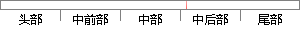

这样做最大的好处是可以为图片资源提供CDN加速，进而提高网页加载速度。
片段位置图

相似结果|
1
原句片段：这样做最大的好处是可以为图片资源提供CDN加速，进而提高网页加载速度。
相似片段 1：处理和CDN加速,你可以将你自己的图片、文件等存储在...这样做的最大好处就是资源都是无缝迁移,且本地文件...2、DNS:减少域名DNS解析时间将网页加载速度提升新层次...
|
※ 片段修改建议 ※
近似词参考：- 这样：如许
- 好处：益处 优点 利益
- 以为：觉得 认为
- 资源：资本
- 提供：供给 供应
- 加速：加快
- 提高：进步
- 速度：速率
系统自动生成语句：如许做最大的益处是可觉得图片资本供给CDN加快，进而进步网页加载速率。
注：本片段修改建议为系统自动生成，仅供参考。